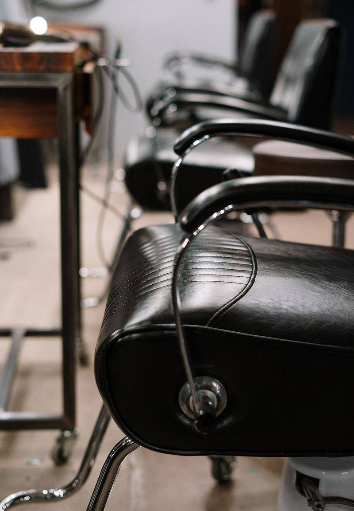
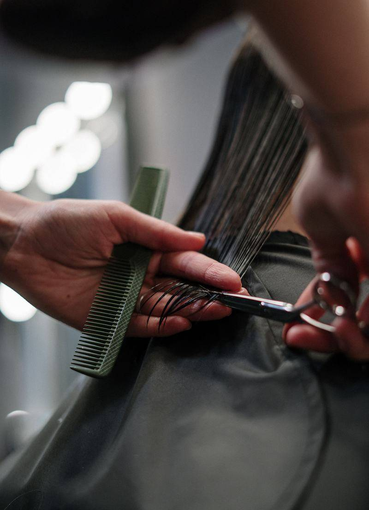
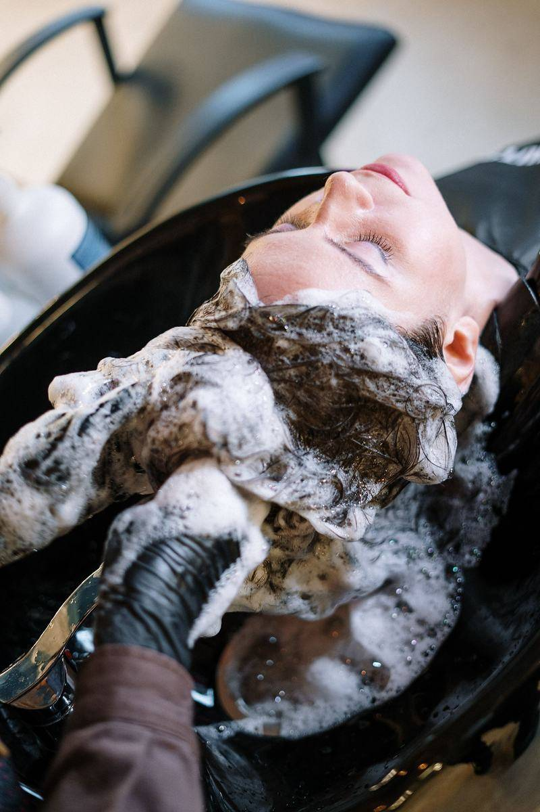

Gallery
The room, close in.
A short set of photographs from one licensed sitting, chosen to show the chairs, the bench and the work — not a catalogue of invented results.






Gallery
A short set of photographs from one licensed sitting, chosen to show the chairs, the bench and the work — not a catalogue of invented results.


